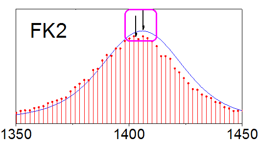

Diagramm von mehreren Feldern mit eingebetteten Zeichnungen der hoch aufgelösten Spektren zum Energieverlust von Elektronen
Panel-Graph-w-Inset-Plots
Zusammenfassung
Origin kann verwendet werden, um ein Diagramm mit drei Feldern zu erstellen, in dem Zeichnungen eingebettet sind, wie im Bild unten zu sehen:

Origin-Version mind. erforderlich: 2015 SR0
Was Sie lernen werden
Dieses Tutorial zeigt Ihnen, wie Sie:
- den Dialog Diagrammeinstellungen verwenden, um Kurven in einem Diagramm mit Daten aus mehreren Arbeitsmappen zu erstellen.
- eingebettete Diagramme hinzufügen.
- Stilformate kopieren und einfügen.
- Verwenden Sie den Dialog Layermanagement, um Achsen zu verknüpfen.
Schritte
Dialog Diagrammeinstellungen verwenden
Dieses Tutorial basiert auf dem Projekt: <Origin-Verzeichnis>\Samples\Tutorial Data.opj.
- Öffnen Sie das Projekt Tutorial Data.opj und
navigieren Sie zu dem Ordner Three Panel Graph with Inset Graphs.
- Aktivieren Sie die Arbeitsmappen Measured und Original name: BOS".
- Stellen Sie sicher, dass in keiner der beiden Arbeitsmappen etwas ausgewählt ist und klicken Sie auf die Schaltfläche Liniendiagramm
 auf der Symbolleiste 2D-Grafiken.
auf der Symbolleiste 2D-Grafiken.
- Der Dialog Diagrammeinstellungen wird geöffnet.
 |
Um alle drei Bedienfelder im Dialog Diagrammeinstellungen anzuzeigen, erweitern Sie bitte das Bedienfeld Diagrammtyp, indem Sie auf  klicken, und erweitern Sie das Bedienfeld Verfügbare Daten, indem Sie erneut auf klicken. klicken, und erweitern Sie das Bedienfeld Verfügbare Daten, indem Sie erneut auf klicken.
Bitte lesen Sie unter Mit Hilfe des Dialogs Diagrammeinstellungen zeichnen weitere Informationen zu diesem Thema.
|
- Wählen Sie unter Verfügbare Daten die Option Arbeitsblätter in Ordner in der Auswahlliste. Auf diese Weise wird sicher gestellt, dass im Bedienfeld auf der rechten Seite die Daten aus allen Arbeitsmappe im aktuellen Ordner verfügbar sind.
- Stellen Sie weiterhin sicher, dass das Arbeitsblatt Original name: BOS ausgewählt ist (siehe oben). Aktivieren Sie im mittleren Bedienfeld das zu X und A4 zugehörige Kontrollkästchen und das Kontrollkästchen für Y und B4.
- Dadurch wird Spalte col(A4) als X-Werte und Spalte col(B4) als Y-Werte gesetzt, unabhängig von der Spaltenzuweisung in der Arbeitsmappe. Wählen Sie Hinzufügen, und eine neue Kurve wird in dem vorhandenen Layer im dritten Bedienfeld erstellt:

- Ändern Sie im ersten Bedienfeld die markierte Arbeitsmappe und wählen Sie nun Measured.
- Setzen den Diagrammtyp links auf Punktdiagramm.
- Aktivieren Sie im zweiten Bedienfeld die Kontrollkästchen wie unten gezeigt:
- Wählen Sie Hinzufügen, und die Zeichnung wird zu dem Layer im dritten Bedienfeld hinzugefügt. Klicken Sie auf OK, um den Dialog zu schließen. Das Diagramm sollte wie in der Abbildung unten aussehen:

- Aktivieren Sie eine der Arbeitsmappen und befolgen Sie die obenstehenden Anweisungen, um zwei weitere Diagramme zu erstellen, indem Sie die folgenden Zuweisungen im Dialog Diagrammeinstellungen verwenden (denken Sie daran, den Diagrammtyp für die Daten aus Measured in Punktdiagramm zu ändern):
Graph 2
| Arbeitsblattname |
X setzen als |
Y setzen als |
| Original name: BOS |
A1 |
B1 |
| Measured |
C |
D |
Graph 3
| Arbeitsblattname |
X setzen als |
Y setzen als |
| Original name: BOS |
A2 |
B2 |
| Measured |
A |
B |
Eingebettete Diagramme hinzufügen
- Klicken Sie auf die Schaltfläche Eingefügtes Diagramm mit Daten hinzufügen
 auf der Symbolleiste Diagramm, um ein eingebettetes Diagramm zu jedem Diagramm hinzuzufügen. Jedes eingebettete Diagramm wird in seinem eigenen Layer angezeigt, und jedes Diagramm kann benutzerdefiniert angepasst, vergrößert, geschwenkt und verschoben werden wie das Hauptdiagramm in voller Größe, aus dem es erstellt wurde.
auf der Symbolleiste Diagramm, um ein eingebettetes Diagramm zu jedem Diagramm hinzuzufügen. Jedes eingebettete Diagramm wird in seinem eigenen Layer angezeigt, und jedes Diagramm kann benutzerdefiniert angepasst, vergrößert, geschwenkt und verschoben werden wie das Hauptdiagramm in voller Größe, aus dem es erstellt wurde.
- Markieren Sie jedes Diagramm und ziehen Sie es in die Mitte:
Diagramme zusammenfügen
- Wählen Sie im Origin-Menü Grafik: Grafikfenster zusammenfügen: Dialog öffnen. Alternativ klicken Sie auf die Schaltfläche
 auf der Symbolleiste Diagramm.
auf der Symbolleiste Diagramm.
- In dem aufgerufenen Dialog Graph Manipulation: merge_graph erweitern Sie den Zweig Einstellungen Anordnung und setzen Sie die Anzahl der Zeilen auf 3 und Anzahl der Spalten auf 1. Im Bedienfeld auf der rechten Seite wird die Vorschau angezeigt.
- Aktivieren Sie das Kontrollkästchen Jedes Quelldiagramm als eine Einheit behandeln, um die Diagramme und die entsprechenden eingebetteten Diagramme verknüpft zu lassen.
- Aktivieren Sie Achsenrahmen zeigen, um jedem Diagramm einen Rahmen hinzuzufügen.
- Klicken Sie auf OK, um den Dialog zu schließen.
Zeichnungen benutzerdefiniert anpassen und die Funktion Format kopieren
- Klicken Sie zum Öffnen des Dialogs Details Zeichnung doppelt auf das erste Diagramm.
- Verwenden Sie die Schaltfläche , um das linke Bedienfeld zu erweitern. Klicken Sie auf den Pfeil neben dem Symbol von Layer1, um ihn zu erweitern und den Inhalt von Layer1 anzuzeigen.
- Markieren Sie die Zeichnung [ Measured ]Sheet1!E[ X ]... und ändern Sie auf der Registerkarte Symbole das Symbol in einen Kreis, die Größe in 5 und die Symbolfarbe in Rot. Klicken Sie auf Übernehmen.
- Markieren Sie die Zeichnung [ Fitted ]Sheet1!A4[ X ],B4... und setzen Sie auf der Registerkarte Linie die Linienfarbe auf Blau.
- Klicken Sie auf OK, um den Dialog zu schließen.
- Der nächste Schritt besteht darin, dieses Farbschema auf alle Hauptdiagramme und eingebetteten Diagramme anzuwenden, um zu verhindern, sie alle manuell zu ändern. Klicken Sie mit der linken Maustaste auf das angepasste Diagramm und wählen Sie im Kontextmenü Format kopieren: Alle Stilformate:
- Klicken Sie mit der rechten Maustaste auf alle restlichen Diagramme und wählen Sie im Kontextmenü Format einfügen:
Im Dialog Layermanagement Achsen verknüpfen und benutzerdefiniert anpassen
Der nächste Schritt besteht darin, die Skalierungen der Achsen festzulegen und die Achsenunterbrechungen hinzuzufügen, um die wichtigen Teile der Diagramme zu zeigen.
- Wählen Sie Grafik: Layerverwaltung. In dem aufgerufenen Dialog sehen Sie auf der linken Seite ein Bedienfeld mit dem Namen Layerauswahl. Es listet alle sechs Layer in diesem Diagramm auf - 3 für Hauptdiagramme und 3 für eingebettete Diagramme.
- Um eine der Hauptdiagrammachsen benutzerdefiniert anzupassen und die Änderungen auf die zwei anderen Hauptdiagramme anzuwenden, werden die Achsen auf der Registerkarte Verknüpfung verknüpft. Der erste Layer kann nicht verknüpft werden. Dies ist der Layer, der benutzerdefiniert angepasst wird und mit dem die anderen Diagramme verknüpft werden. Wählen Sie Layer 3 und setzen Sie auf der Registerkarte Verknüpfung die Option Verknüpfen mit auf 1 und Verknüpfung der X-Achse sowie Verknüpfung der Y-Achse auf Gerade [1 zu 1] (wie unten zu sehen):
- Klicken Sie auf Übernehmen.
- Tun Sie dasselbe für Layer 5 und klicken Sie auf Anwenden.
- Klicken Sie auf OK, um den Dialog zu schließen.
- Klicken Sie doppelt auf eine der Achsen im ersten Diagramm, um den Dialog Achsen zu öffnen.
- Klicken Sie auf das Symbol Horizontal auf der Registerkarte Skalierung und setzen Sie Von und Bis auf -250 bzw. 1500. Setzen Sie den Wert des Inkrements für die Großen Hilfsstriche auf 250.
- Wählen Sie jetzt das Symbol Horizontal auf der Registerkarte Unterbrechungen und setzen Sie die Anzahl der Unterbrechungen auf 1.
- Wählen Sie Unterbrechung1 im Zweig Unterbrechungen und erstellen Sie eine Unterbrechung Von: 850, Bis: 1250.
- Deaktivieren Sie auf derselben Seite das Kontrollkästchen Auto für Position (% der Achsenlänge) und legen Sie 75 fest.
- Gehen Sie zum Symbol Vertikal auf der Registerkarte Skalierung und setzen Sie die Skalierung auf Von 0 Bis 0,22 mit Inkrementen von 0,1.
- Wählen Sie OK aus. Alle drei Diagramme geben nun Ihre Änderungen wieder.
- Um die eingefügten Diagramme benutzerdefiniert anzupassen, vergrößern Sie das erste Diagramm in Layer2 mit der Schaltfläche Zoomen-Schwenken
 auf der Symbolleiste Hilfsmittel. Verwenden Sie zum Vergrößern das Mausrad.
auf der Symbolleiste Hilfsmittel. Verwenden Sie zum Vergrößern das Mausrad.
- Sobald Sie es vergrößert haben, wählen Sie die Schaltfläche Zeiger
 auf der Symbolleiste Hilfsmittel, um den Zoommodus zu verlassen. Klicken Sie zum Öffnen des Dialogs Details Zeichnung doppelt auf das eingebettete Diagramm. Wählen Sie die Zeichnung [Measured]Sheet1!E[X]... und aktivieren Sie auf der Registerkarte Ankerlinien das Kontrollkästchen Vertikal. Klicken Sie auf OK.
auf der Symbolleiste Hilfsmittel, um den Zoommodus zu verlassen. Klicken Sie zum Öffnen des Dialogs Details Zeichnung doppelt auf das eingebettete Diagramm. Wählen Sie die Zeichnung [Measured]Sheet1!E[X]... und aktivieren Sie auf der Registerkarte Ankerlinien das Kontrollkästchen Vertikal. Klicken Sie auf OK.
- Klicken Sie doppelt auf eine der Achsen.
- Setzen Sie im Dialog Achsen die Skalierung der X-Achse auf der Registerkarte Skalierung auf die Werte Von: 1350 und Bis: 1450 mit Inkrementen von 50.
- Setzen Sie bei aktivem Symbol Vertikal die Werte der Skalierung auf Von 0 und Bis 0,03. Wechseln Sie zur Registerkarte Linien und Hilfsstriche und setzen Sie bei aktivem Symbol Links die Großen Hilfsstriche auf Kein und die Kleinen Hilfsstriche auf Kein.
- Klicken Sie auf OK, um den Dialog zu schließen. Wählen Sie die Hilfsstrichsbeschriftungen auf der linken Y-Achse und drücken Sie Entfernen, um sie zu entfernen. Tun Sie dasselbe mit den Achsenbeschriftungen.
- Drücken Sie zur Verkleinerung Strg+W, um wieder zu der Normalgröße zurückzukehren.
- Markieren Sie das benutzerdefinierte eingebettete Diagramm, klicken Sie mit der rechten Maustaste darauf und wählen Sie Format kopieren: Alle Stilformate im Kontextmenü.
- Markieren Sie genauso die zwei anderen eingebetteten Diagramme, klicken Sie mit der rechten Maustaste und wählen Sie Format einfügen, um die Einstellungen der Ankerlinien zu duplizieren.
- Wiederholen Sie die zwei obenstehenden Schritte, indem Sie dieses Mal Format kopieren: Skalierungen wählen, um die Achseneinstellungen zu duplizieren.
Titel, Legenden und Textobjekte hinzufügen
- Aktivieren Sie den ersten Layer, indem Sie auf das Layersymbol oben links im Diagramm klicken. Klicken Sie mit der rechten Maustaste auf das Diagramm und wählen Sie im Kontextmenü Layertitel hinzufügen/modifizieren. Geben Sie in dem angezeigten Feld Wurtzite GaN ein, ändern Sie die Schriftgröße und -typ und ziehen Sie es in die gewünschte Position:

- Markieren Sie die Legendenobjekte für das zweite und dritte Diagramm und drücken Sie Entfernen.
- Markieren Sie die verbleibende Legende, klicken Sie mit der rechten Maustaste und wählen Sie Einstellungen. Geben Sie im Dialog Objekteigenschaften den Text Fitted anstelle von %(1) ein und Measured anstelle von %(2). Platzieren Sie beide in der gleichen Zeile. Legen Sie, wenn Sie möchten, die Schriftgröße fest und setzen Sie den Hintergrund auf Kein. Klicken Sie auf OK und ziehen Sie die Legende in eine geeignete Position.
- Löschen Sie die Titel der ersten und dritten Y-Achse. Klicken Sie doppelt auf den zweiten und geben Sie Intensity [arb. units] ein. Tun Sie dasselbe bei dem einzelnen X-Achsentitel und beschriften Sie ihn mit Energy Loss [cm-1].
- Klicken Sie mit der rechten Maustaste auf das Diagramm und wählen Sie Text hinzufügen im Kontextmenü oder wählen Sie die Schaltfläche
 auf der Symbolleiste Hilfsmittel. Fügen Sie, wie unten gezeigt, Textobjekte ein. Verwenden Sie die Schaltfläche
auf der Symbolleiste Hilfsmittel. Fügen Sie, wie unten gezeigt, Textobjekte ein. Verwenden Sie die Schaltfläche  zum Schreiben von tiefgestellten Zeichen:
zum Schreiben von tiefgestellten Zeichen:

- Markieren Sie jedes der eingebetteten Diagramme und ändern Sie Größe oder Position nach Wunsch. Verwenden Sie die Schaltfläche
 auf der Symbolleiste Hilfsmittel, um an den gewünschten Stellen in den eingefügten Diagrammen Pfeile zu erstellen:
auf der Symbolleiste Hilfsmittel, um an den gewünschten Stellen in den eingefügten Diagrammen Pfeile zu erstellen:
- 
- Das Diagramm sollte am Ende folgendermaßen aussehen: